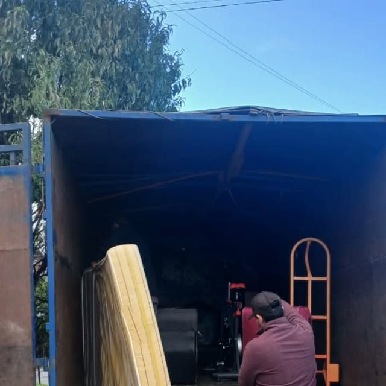
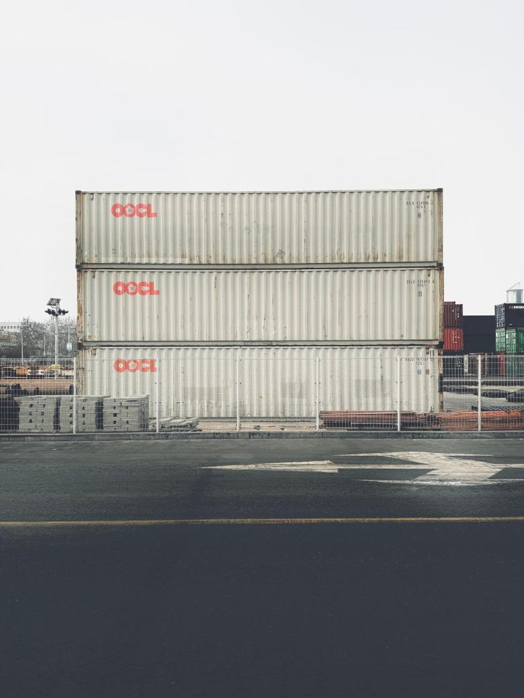
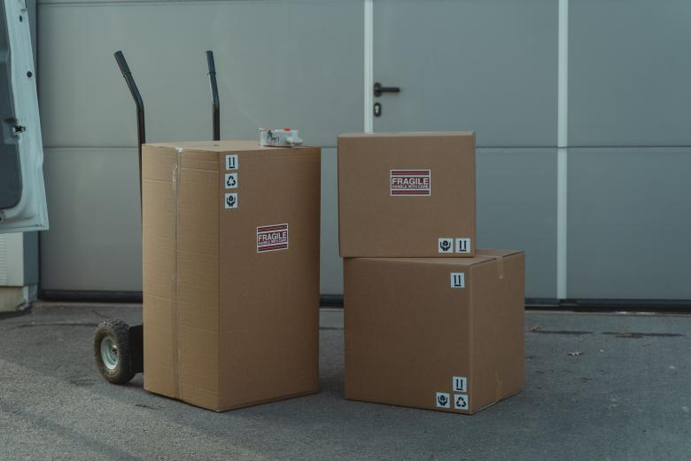

01
La distancia
Kilómetros de ida y de vuelta, y el estado del camino. No es lo mismo cincuenta kilómetros de asfalto que veinte de ripio en invierno.
Propuesta de sitio web — preparada para Transportes Rojas por CristalWeb
Revisado el 31-08-2026: rojastransportes.cl ya no existe. No está caído — el dominio no resuelve, salió del registro. Tuvieron sitio, se les soltó, y en un rubro donde el cliente es una empresa que googlea en horario de oficina, eso es dejar de existir. Cualquiera puede tomar ese dominio hoy, incluido un competidor.
Transporte de carga · Villarrica
Es la primera frase de toda llamada de flete, y la respuesta siempre depende de lo mismo: qué es, cuánto pesa, dónde se carga y dónde se descarga. Esta página deja eso escrito para que la llamada empiece por el precio y no por veinte preguntas.
La ficha del servicio
La mitad de esta ficha está por confirmar, y así se entrega: en un servicio de carga, decir «llevamos de todo» y después no poder es peor que no decir nada. Lo que está escrito es general del rubro; las capacidades y la cobertura las pone el transportista.
Qué se lleva
falta: qué transportan ustedes de verdad y qué prefieren no tomar
Capacidad
Estas cinco medidas son las que decide todo: si el sofá entra, si hay que desarmar, si se necesita otra persona.
Dónde
falta: hasta qué ciudades y hasta qué sectores rurales llegan, y si hacen viajes fuera de la región
En transporte, la cobertura escrita es la mitad de la venta: el que necesita llegar a un sector que nadie cubre llama al primero que lo diga.
Qué no se lleva
Esto es general y no cita ninguna norma por número: lo específico lo confirma el transportista. falta: revisar esta lista con ellos
Lo que decide el precio
Un flete se cotiza por volumen y por acceso, no por kilómetros. Diez cajas y un refrigerador caben donde no cabe un living completo, y una casa con escalera angosta toma el doble de tiempo que una con estacionamiento en la puerta. Por eso las cuatro preguntas de esta página son las mismas cuatro que hace el transportista por teléfono.
Para que la llamada dure dos minutos
Nadie puede dar un precio sin estos datos, y por eso la primera llamada casi siempre se va en preguntas. Explicado antes, el cliente llama con la información lista y la cotización sale al tiro.
01
Kilómetros de ida y de vuelta, y el estado del camino. No es lo mismo cincuenta kilómetros de asfalto que veinte de ripio en invierno.
02
Un camión se llena por volumen antes que por peso casi siempre. Un flete de colchones y uno de cemento ocupan al revés.
03
Es la parte que más se olvida y la que más tiempo toma: si hay escaleras, si hay estacionamiento, si alguien ayuda o el chofer lo hace solo. El tiempo de espera también es tiempo de camión.
04
Un flete programado con anticipación se acomoda con otros de la misma ruta. Uno de urgencia ocupa el camión entero.
Con estas cuatro cosas en el mensaje, la respuesta llega con precio en vez de con preguntas:
Y el día que lo necesita. Eso es todo — el resto lo calcula el transportista.
Esta página no publica tarifas ni promete plazos: el precio de un flete depende de cada caso y lo entrega el transportista. Las capacidades del camión y la cobertura están declaradas como pendientes porque no me constan, y la lista de lo que no se transporta es general y no cita normativa.
«¿Me lo llevan?»
La primera frase de toda llamada de flete
Para cotizar
Es el número publicado en su ficha de Google. Conviene mandar los cuatro datos de arriba en el primer mensaje.
Foto publicada por ellos mismos en su Instagram de Villarrica. Es la parte del trabajo que nadie fotografía: la carga entrando al camión, envuelta y amarrada.

falta: el camión completo con el letrero, y una foto de la carga ya estibada. Con eso el cliente ve el tamaño real de lo que contrata.
Estas seis ya aparecen más arriba en la página. Vuelven acá en otro tamaño porque una sola pasada de imágenes deja el scroll vacío, y porque de cerca se ven cosas que en grande se pierden. La procedencia de cada una está en imagenes/FUENTES.txt.


El teléfono 9 8569 6029 de su ficha de Google, y que rojastransportes.cl no resuelve: el dominio salió del registro. Revisado el 31-08-2026 y comprobable en un minuto.
La carga típica, los cuatro factores del precio y la lista de lo que no se lleva. Son del rubro, no suyos, y van marcados.
Las medidas del camión —tipo, largo útil, ancho, alto, carga máxima y si tiene rampa— y la cobertura. Son siete datos que ustedes saben de memoria y que hoy nadie puede leer en ninguna parte.